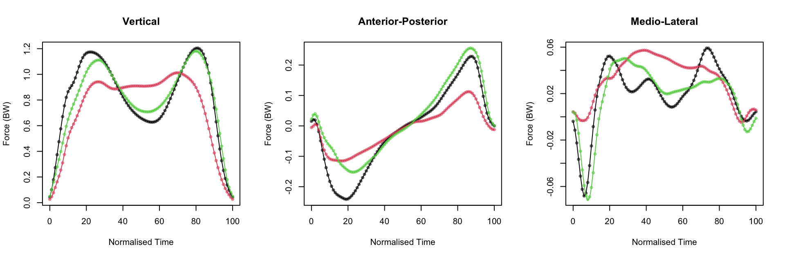

library(tidyverse) # CRAN v1.3.1
library(data.table) # CRAN v1.14.2
library(fda) # CRAN v5.5.1 Case Study Part 1: Exploration and Basis Expansion
Set Up and Data Import
Packages
Load Custom Functions
source(here::here("functions", "theme_gunning.R"))
source(here::here("functions", "functional_boxplot_gg.R"))
theme_gunning()Read in Data
# Read in from storage:
GRF_dataset_PRO_meta <- readRDS(file = here::here("chapter-06",
"data",
"GRF_dataset_PRO_meta.rds"))Plot a Sample of Curves
# ggplot requires reshaping data from wide to long.
# do reshaping with data.table because it's a little easier
# and then continue to use data.table for a little while!
GRF_dataset_PRO_meta <- data.table(GRF_dataset_PRO_meta)
GRF_dataset_PRO_meta_long <- melt.data.table(GRF_dataset_PRO_meta,
measure.vars = paste0("time_", 0:100),
variable.name = "time",
value.name = "force")
GRF_dataset_PRO_meta_long[, time := as.numeric(stringr::str_remove(time, "time_"))]
GRF_dataset_PRO_meta_long[, obs_id := paste(SUBJECT_ID, SESSION_ID, TRIAL_ID, sep = "_")]# Take Sample of Observations
set.seed(1)
random_sample_ids <- sample(unique(GRF_dataset_PRO_meta_long$obs_id), size = 100)
GRF_dataset_PRO_meta_long_sample <- GRF_dataset_PRO_meta_long[obs_id %chin% random_sample_ids]
# Rename Factor Labels for Plot:
GRF_dataset_PRO_meta_long_sample[, side := fifelse(side=="left", "Left Side", "Right Side")]
GRF_dataset_PRO_meta_long_sample[, component := factor(component,
levels = c("vertical", "anterior_posterior", "medio_lateral"),
labels = c("Vertical", "Anterior-Posterior", "Medio-Lateral"))]
# Make Plot:
ggplot(data = GRF_dataset_PRO_meta_long_sample) +
aes(x = time, y = force,
group = obs_id,
colour = interaction(component, side)) +
facet_grid(component ~ side, scales = "free_y") +
geom_line(alpha = 0.75) +
labs(x = "Normalised Time",
y = "Force (BW)",
title = "GaitRec Ground Reaction Force Dataset",
subtitle = "A Random Sample of 100 Observations") +
theme(legend.position = "none",
plot.subtitle = element_text(size = 10, hjust = 0.5))Basis Expansion/ Interpolation
Loop through and try different basis sizes (different values of \(K\)).
k_seq <- seq(15, 80, by = 5)
SSE_vec <- vector("numeric", length = length(k_seq))
y <- t(GRF_dataset_PRO_meta[, paste0("time_", 0:100)])
SSE_mat <- matrix(NA, nrow = ncol(y), ncol = length(k_seq))
for(k in seq_along(k_seq)) {
# loop through different values of k
print(paste("iteration", k, "of", length(k_seq)))
bspl_k <- create.bspline.basis(rangeval = c(0, 100), nbasis = k_seq[k], norder = 4)
GRF_dataset_PRO_meta_smooth_basis <- smooth.basis(argvals = 0:100,
y = y,
fdParobj = bspl_k)
yhat <- predict(GRF_dataset_PRO_meta_smooth_basis)
SSE_mat[,k] <- apply((y - yhat)^2, 2, sum) # calculate (discrete approx. to) integrated squared error
}[1] "iteration 1 of 14"
[1] "iteration 2 of 14"
[1] "iteration 3 of 14"
[1] "iteration 4 of 14"
[1] "iteration 5 of 14"
[1] "iteration 6 of 14"
[1] "iteration 7 of 14"
[1] "iteration 8 of 14"
[1] "iteration 9 of 14"
[1] "iteration 10 of 14"
[1] "iteration 11 of 14"
[1] "iteration 12 of 14"
[1] "iteration 13 of 14"
[1] "iteration 14 of 14"boxplot(sqrt(SSE_mat),
names = k_seq,
xlab = "Number of Basis Functions",
ylab = "Root SSE",
main = "Approximation Error from Interpolation")
abline(v = which(k_seq==35), lwd = 3, col = "green4")Choose \(K=35\) basis functions and plot some fits:
# Do basis representation: ------------------------------------------------
bspl_35 <- create.bspline.basis(rangeval = c(0, 100), nbasis = 35, norder = 4)
GRF_dataset_PRO_meta_smooth_basis <- smooth.basis(argvals = 0:100,
y = y,
fdParobj = bspl_35)
yhat <- predict(GRF_dataset_PRO_meta_smooth_basis)
sample_inds <- sample(seq_len(ncol(y)/3), size = 3)
par(mfrow = c(1, 3))
# Vertical:
matplot(x = 0:100,
y = y[, GRF_dataset_PRO_meta$component=="vertical"][, sample_inds],
col = alpha(1:3, 0.5),
xlab = "Normalised Time",
ylab = "Force (BW)",
pch = 20)
matlines(x = 0:100,
y = y[, GRF_dataset_PRO_meta$component=="vertical"][, sample_inds],
lty = 1)
title("Vertical")
# A-P
matplot(x = 0:100,
y = y[, GRF_dataset_PRO_meta$component=="anterior_posterior"][, sample_inds],
col = alpha(1:3, 0.5),
xlab = "Normalised Time",
ylab = "Force (BW)",
pch = 20)
matlines(x = 0:100,
y = y[, GRF_dataset_PRO_meta$component=="anterior_posterior"][, sample_inds],
lty = 1)
title("Anterior-Posterior")
# M-L:
matplot(x = 0:100,
y = y[, GRF_dataset_PRO_meta$component=="medio_lateral"][, sample_inds],
col = alpha(1:3, 0.5),
xlab = "Normalised Time",
ylab = "Force (BW)",
pch = 20)
matlines(x = 0:100,
y = y[, GRF_dataset_PRO_meta$component=="medio_lateral"][, sample_inds],
lty = 1)
title("Medio-Lateral")
Append the calculated basis coefficients to our data matrix so we can use them later:
GRF_dataset_PRO_meta_basis_coefs <- t(GRF_dataset_PRO_meta_smooth_basis$fd$coefs)
GRF_dataset_PRO_meta <- cbind(GRF_dataset_PRO_meta,
t(GRF_dataset_PRO_meta_smooth_basis$fd$coefs))Visualisation: Functional Boxplot
Standard Version
For exploratory data analysis, construct functional boxplots using the boxplot.fd() (or fbplot()) function.
# Split into vertical, medio_lateral and anterior_posterior components
# for function boxplots.
GRF_dataset_PRO_meta_V <- GRF_dataset_PRO_meta[component=="vertical"]
GRF_dataset_PRO_meta_V_fd <- fd(coef = t(as.matrix(GRF_dataset_PRO_meta_V[, paste0("bspl4.", 1:35)])),
basisobj = bspl_35)
GRF_dataset_PRO_meta_ML <- GRF_dataset_PRO_meta[component=="medio_lateral"]
GRF_dataset_PRO_meta_ML_fd <- fd(coef = t(as.matrix(GRF_dataset_PRO_meta_ML[, paste0("bspl4.", 1:35)])),
basisobj = bspl_35)
GRF_dataset_PRO_meta_AP <- GRF_dataset_PRO_meta[component=="anterior_posterior"]
GRF_dataset_PRO_meta_AP_fd <- fd(coef = t(as.matrix(GRF_dataset_PRO_meta_AP[, paste0("bspl4.", 1:35)])),
basisobj = bspl_35)
par(mfrow = c(1, 3))
p1 <- fda::boxplot.fd(GRF_dataset_PRO_meta_V_fd,
xlab = "Normalised Time",
ylab = "Force (BW)",
main = "Vertical")
p2 <- fda::boxplot.fd(GRF_dataset_PRO_meta_AP_fd,
xlab = "Normalised Time",
ylab = "Force (BW)",
main = "Anterior-Posterior")
p3 <- fda::boxplot.fd(GRF_dataset_PRO_meta_ML_fd,
xlab = "Normalised Time",
ylab = "Force (BW)",
main = "Medio-lateral")(Experimental) ggplot() Version
Can equivalently use a wrapper function that I’ve written to turn these into pretty ggplot figures for the manuscript:
V_fboxplot <-create_functional_boxplot_gg(time_grid = 0:100, fd_obj = GRF_dataset_PRO_meta_V_fd)$ggplot +
labs(title = "Vertical")AP_fboxplot <- create_functional_boxplot_gg(time_grid = 0:100, fd_obj = GRF_dataset_PRO_meta_AP_fd)$ggplot +
labs(title = "Anterior-Posterior")ML_fboxplot <- create_functional_boxplot_gg(time_grid = 0:100, fd_obj = GRF_dataset_PRO_meta_ML_fd)$ggplot +
labs(title = "Medio-Lateral")(combined_plot <- list(V_fboxplot, AP_fboxplot, ML_fboxplot) %>%
lapply(function(x) {
x + labs(x = "Normalised Time",
y = "Force (BW)")
}) %>%
ggpubr::ggarrange(plotlist = ., ncol = 3 , nrow = 1))Session Information (Reproducibility)
sessionInfo()R version 4.1.2 (2021-11-01)
Platform: x86_64-apple-darwin17.0 (64-bit)
Running under: macOS Big Sur 10.16
Matrix products: default
BLAS: /Library/Frameworks/R.framework/Versions/4.1/Resources/lib/libRblas.0.dylib
LAPACK: /Library/Frameworks/R.framework/Versions/4.1/Resources/lib/libRlapack.dylib
locale:
[1] en_IE.UTF-8/en_IE.UTF-8/en_IE.UTF-8/C/en_IE.UTF-8/en_IE.UTF-8
attached base packages:
[1] splines stats graphics grDevices utils datasets methods
[8] base
other attached packages:
[1] fda_5.5.1 deSolve_1.30 fds_1.8 RCurl_1.98-1.6
[5] rainbow_3.6 pcaPP_1.9-74 MASS_7.3-55 Matrix_1.4-0
[9] data.table_1.14.2 forcats_0.5.1 stringr_1.4.0 dplyr_1.1.2
[13] purrr_0.3.4 readr_2.1.2 tidyr_1.2.0 tibble_3.2.1
[17] ggplot2_3.4.2 tidyverse_1.3.1
loaded via a namespace (and not attached):
[1] bitops_1.0-7 fs_1.6.2 lubridate_1.8.0 httr_1.4.2
[5] rprojroot_2.0.2 tools_4.1.2 backports_1.4.1 utf8_1.2.2
[9] R6_2.5.1 KernSmooth_2.23-20 DBI_1.1.2 colorspace_2.0-3
[13] withr_2.5.0 tidyselect_1.2.0 compiler_4.1.2 cli_3.6.0
[17] rvest_1.0.2 xml2_1.3.3 labeling_0.4.2 scales_1.2.1
[21] mvtnorm_1.1-3 digest_0.6.29 rmarkdown_2.11 pkgconfig_2.0.3
[25] htmltools_0.5.5 dbplyr_2.1.1 fastmap_1.1.0 htmlwidgets_1.6.2
[29] rlang_1.1.1 readxl_1.3.1 rstudioapi_0.13 generics_0.1.2
[33] farver_2.1.0 jsonlite_1.8.0 mclust_5.4.9 car_3.0-12
[37] magrittr_2.0.2 Rcpp_1.0.10 munsell_0.5.0 fansi_1.0.2
[41] abind_1.4-5 lifecycle_1.0.3 stringi_1.7.6 yaml_2.3.5
[45] carData_3.0-5 grid_4.1.2 crayon_1.5.0 lattice_0.20-45
[49] haven_2.4.3 cowplot_1.1.1 hms_1.1.1 knitr_1.37
[53] pillar_1.9.0 ggpubr_0.4.0 ggsignif_0.6.3 reprex_2.0.1
[57] glue_1.6.2 evaluate_0.15 modelr_0.1.8 vctrs_0.6.2
[61] tzdb_0.2.0 cellranger_1.1.0 gtable_0.3.0 assertthat_0.2.1
[65] ks_1.13.4 xfun_0.39 broom_0.7.12 pracma_2.3.8
[69] rstatix_0.7.0 cluster_2.1.2 ellipsis_0.3.2 hdrcde_3.4
[73] here_1.0.1